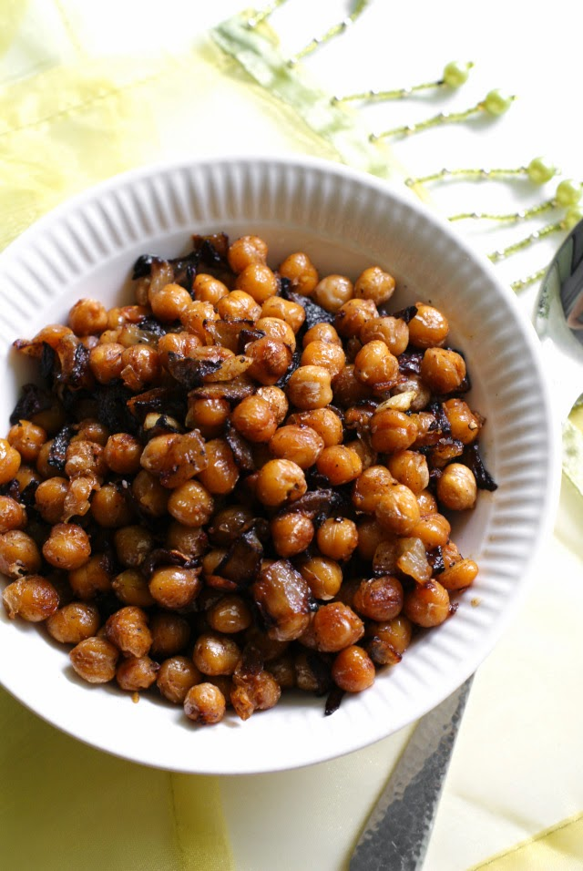

Chickpeas and Onions

Description
This is a simple but delicious meal that you can easily modify to suit your tastes.
Experiment with different spices like cayenne, paprika, and garam masala. You can add ground beef or chopped mushrooms.
I recommend topping it with plain yogurt that's been seasoned with salt, pepper, and lemon juice and adding chopped parsely or cilantro.
Ingredients
- 1 28 oz. can of chickpeas, drained and rinsed
- 1 tablespoon of olive oil or rapeseed oil
- 1 whole small yellow onion or 1 half of a large yellow onion, diced
- 1 clove garlic, minced
- 1 teaspoon cumin
- salt and pepper to taste
Steps
- Heat the oil in a pan over medium heat. Add the onion and stir to coat. Cook until translucent and starting to color, 5 to 10 minutes.
- Add garlic and cook for another 2 minutes.
- Add the chickpeas, salt, pepper, and cumin. Cook for another 5 to 10 minutes. If the heat is high, the chickpeas may "pop", in which case, turn down the heat and use a lid.
Back to the recipe list.